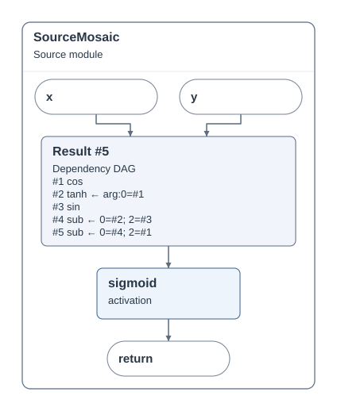
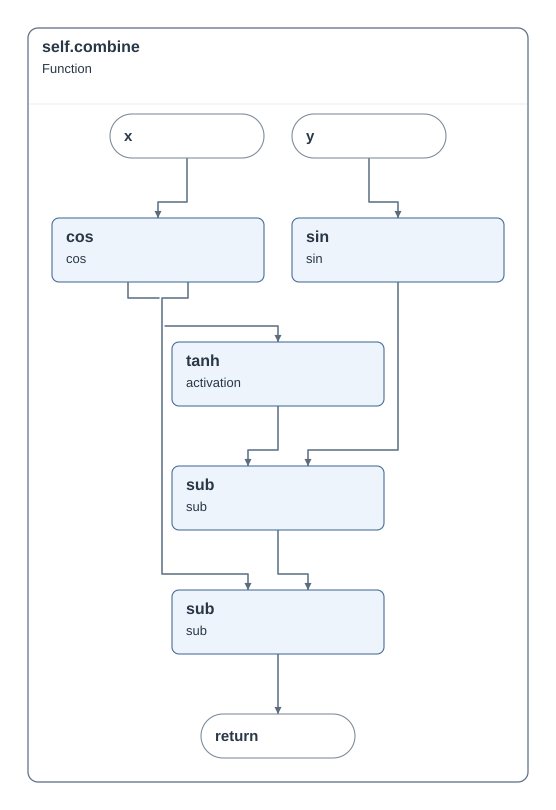
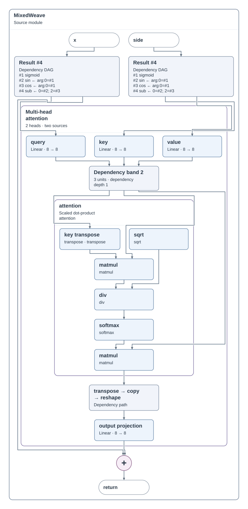
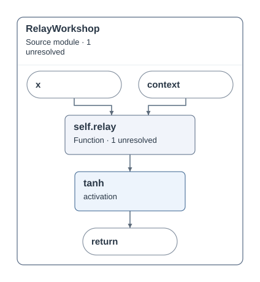
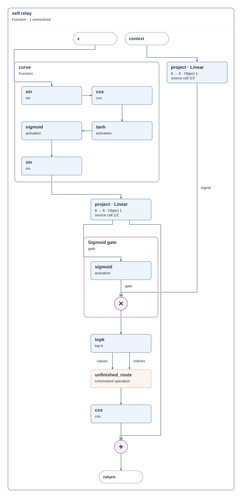
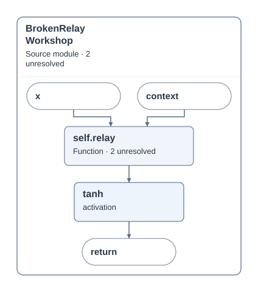
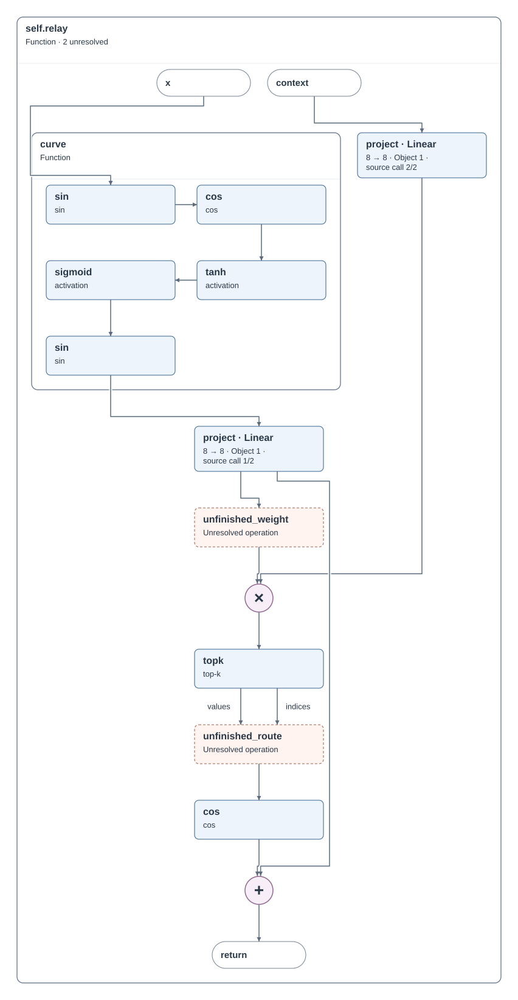
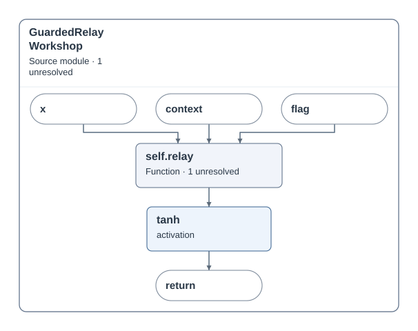
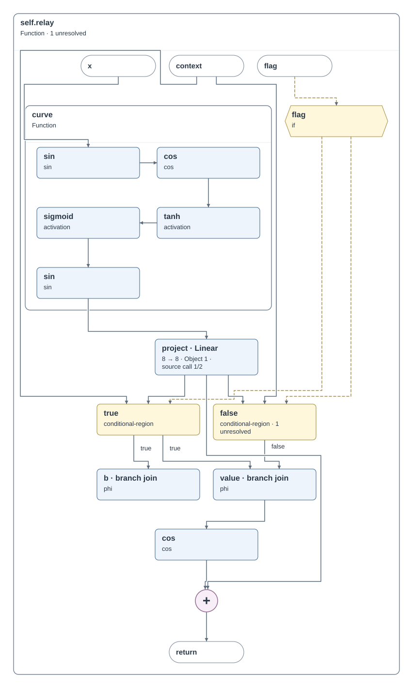

旧主图：6 节点


SourceMosaic-before-initial · 点击查看原始 SVG
从相同底层事实，比较主图局部展开和独立详图。按真实路径兑现的目标与实际面积、图数选择。该功能是有界局部搜索；默认旧策略保留，编辑器通过“规划主图与详图”显式启用。
完整目标尚未完成。Transformer 在两次试算预算下覆盖退化（49 → 41）；其主图 SVG 不变。此轮不能据此声称更接近专用图。陌生案例有局部收益，条件结构仍有未兑现目标。
全部实际 SVG 原始字号审核 · 全部候选与选择记录 · 独立核验 · 实际编辑器审核
| 输入 | 已表达 / 目标：旧 → 当前 | 图数：旧 → 当前 | 总面积比：当前 / 旧 | 当前主图节点 |
|---|---|---|---|---|
| SourceMosaic | 9/9 → 9/9 | 2 → 1 | 0.613 | 11 |
| MixedWeave | 17/43 → 20/43 | 3 → 2 | 1.462 | 21 |
| NestedWorkshop | 28/28 → 28/28 | 3 → 3 | 1.000 | 6 |
| BrokenWorkshop | 27/27 → 27/27 | 3 → 3 | 1.000 | 6 |
| ConditionalWorkshop | 11/28 → 11/28 | 2 → 2 | 1.000 | 7 |
| RefactoredCurve | 18/18 → 18/18 | 3 → 3 | 0.964 | 5 |
| LongCurve | 5/17 → 5/17 | 3 → 3 | 1.000 | 5 |
| FiberBlend | 22/25 → 22/25 | 3 → 3 | 0.998 | 20 |
| RelayWorkshop | 20/20 → 20/20 | 2 → 2 | 1.000 | 6 |
| BrokenRelayWorkshop | 18/18 → 18/18 | 2 → 2 | 1.000 | 6 |
| GuardedRelayWorkshop | 18/24 → 18/24 | 2 → 2 | 1.000 | 7 |
| Transformer | 49/1855 → 41/1855 | 3 → 2 | 0.901 | 80 |
SourceMosaic 两种形式都兑现相同的五项新增目标。旧版采用两张图；联合选择保留一张 11 节点主图。其计算仍可在源码视图展开为 16 节点。

SourceMosaic-before-initial · 点击查看原始 SVG

SourceMosaic-current-trial-2 · 点击查看原始 SVG

SourceMosaic-current-trial-1 · 点击查看原始 SVG
SourceMosaic-current-trial-2 · 点击查看原始 SVG
MixedWeave 保留共享调用身份和边界；新主图展开一条已认证角色路径，并选择一个独立依赖区域详图。43 项目标中兑现 20 项，仍有 23 项暂缓。

MixedWeave-current-trial-4 · 点击查看原始 SVG

MixedWeave-current-trial-2 · 点击查看原始 SVG
三份新输入只静态解析，未执行运行追踪。未知与条件内部不被擅自补全；GuardedRelayWorkshop 仍仅兑现 18/24 项。

RelayWorkshop-current-initial · 点击查看原始 SVG

RelayWorkshop-current-trial-1 · 点击查看原始 SVG

BrokenRelayWorkshop-current-initial · 点击查看原始 SVG

BrokenRelayWorkshop-current-trial-1 · 点击查看原始 SVG

GuardedRelayWorkshop-current-initial · 点击查看原始 SVG

GuardedRelayWorkshop-current-trial-1 · 点击查看原始 SVG
同输入、相同两次候选预算。新策略用一次试算比较主图展开与详图，旧策略可将两次全部用于详图；最终 49/1855 → 41/1855。分母是当前作用域逐实例的直接表达目标，不能解释为总体架构正确率。主图均为 80 节点；专用图仅用于视觉评估，不参与规则或候选选择。
Transformer-before-initial · 点击查看原始 SVG
Transformer-current-initial · 点击查看原始 SVG
Transformer-current-trial-1 · 点击查看原始 SVG